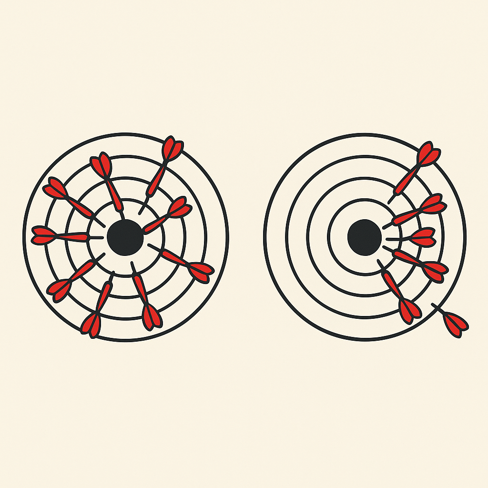
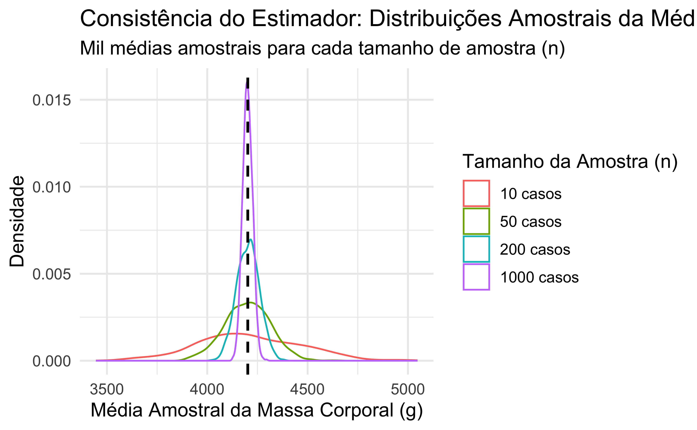

| Massa corporal dos pinguins (g) | |||||
|---|---|---|---|---|---|
| Amostra 1 | Amostra 2 | Amostra 3 | Amostra 4 | Amostra 5 | |
| 5650 | 3300 | 3550 | 3975 | 4975 | |
| 4400 | 6000 | 4300 | 4050 | 5550 | |
| 4750 | 4750 | 4725 | 3550 | 3550 | |
| 4300 | 4400 | 4900 | 4675 | 4700 | |
| 3350 | 5700 | 4300 | 3975 | 4400 | |
| Média | 4490 | 4830 | 4355 | 4045 | 4635 |
Estimadores pontuais e intervalos de confiança
Aprendizados
- O que vamos aprender:
- Desenvolver intuições sobre estimadores pontuais e intervalos de confiança
- O que não vamos aprender em profundidade:
- Os modelos matemáticos que subjazem esses conceitos
- Nesse sentido, pedimos que vocês “aceitem” alguns resultados, mas, posteriormente, podemos tentar entender como eles são formulados
Estimadores pontuais
Definição
Um estimador pontual é uma ferramenta estatística (geralmente uma fórmula matemática) usada para fornecer uma “estimativa única” (um único valor) de um parâmetro desconhecido de uma população, com base em dados amostrais.
Por que “pontual”?: Porque ele nos dá um único ponto (um único valor) como a melhor suposição para o parâmetro da população, em vez de um intervalo de valores (que seria um “estimador intervalar”).
Exemplos
| Parâmetro populacional \(\theta\) | Estimador pontual \(\hat\theta\) |
|---|---|
| Média \(\mu\) | Média amostral \(\bar X = \frac1n\sum_{i=1}^n X_i\) |
| Proporção \(p\) | Proporção amostral \(\hat p = \frac{\text{nº de “sucessos”}}{n}\) |
| Variância \(\sigma^2\) | Variância amostral \(S^2 = \frac1{n-1}\sum (X_i - \bar X)^2\) |
| Parâmetro de Poisson \(\lambda\) | Médodo da máxima verossimilhança: \(\hat\lambda = \bar X\) |
| Coeficiente de regressão \(\beta\) | Estimador dos mínimos quadrados ordinários (OLS) |
Características principais
- Como depende da amostra, o valor do estimador pontual varia de uma amostra para outra. Dizemos que o estimador é uma variável aleatória.
Estimador pontual como variável aleatória
Suponha, para fins didáticos, que o banco de dados penguins contém informações sobre toda a população de pinguins do arquipélogo Palmer. Vamos selecionar 5 amostras de pinguins dessa população (cada uma com 5 pinguins) e calcular a média da massa corporal. O que constatamos sobre cada valor calculado?
Estimador pontual como variável aleatória
Propriedades desejaveis de um estimador pontual
- Não-viesado (unbiasedness): o valor esperado do estimador é igual ao verdadeiro parâmetro
\[E[\hat\theta] = \theta \]
- Consistente (consistency): conforme o tamanho da amostra \(n\) cresce, o estimador converge em probabilidade para o parâmetro
\[\hat{\theta} \xrightarrow{p} \theta \quad \text{quando} \quad n \rightarrow \infty\]
Estimador não viesado

Um estimador que, em média, acerta o alvo. Se você pudesse repetir o processo de amostragem muitas vezes e calcular a estimativa em cada amostra, a média de todas essas estimativas seria igual ao valor verdadeiro do parâmetro que você está tentando estimar. Ele não superestima nem subestima sistematicamente o parâmetro.
Estimador não viesado
Ainda supondo que o banco de dados penguins contém dados de toda a população de pinguins do arquipélogo Palmer, vamos retirar 1000 amostras, cada uma com 200 pinguins, e calcular as médias de cada amostra. Feito isto, vamos calcular a média das médias das amostras. Note que a média da população se aproxima da média das médias amostrais.
| Exemplos de médias calculadas | |
|---|---|
| Estatística | Valor |
| Média da amostra 749 | 4310.125 |
| Média da amostra 485 | 4181.750 |
| Média da amostra 931 | 4174.500 |
| Média da amostra 550 | 4146.500 |
| Média da amostra 469 | 4258.875 |
| Média da população = 4201.75 | |
| Média das médias amostrais = 4203.70 | |
Estimador não viesado

Estimador consistente
Um estimador é consistente se ele melhora sua precisão à medida que obtém mais informação (ou seja, à medida que o tamanho da amostra aumenta). Quanto maior a sua amostra, maior a probabilidade de sua estimativa estar muito próxima do valor verdadeiro do parâmetro.
Estimador consistente
Mais uma vez, suponha que penguins contem toda a população de pinguins das ilhas do arquipélogo Palmer. Dessa vez, vamos gerar 1000 amostras com 10 casos, 1000 com 50 casos, 1000 com 200 casos e, por fim, 1000 com 1000 casos cada. O que acontece com a variância à medida em que o número de casos aumenta? O que isso nos diz sobre os dados e sobre a consistência do estimador?
| Tamanho da amostra | Média | Variância |
|---|---|---|
| 10 casos | 4208.25 | 66924.36 |
| 50 casos | 4200.67 | 12866.58 |
| 200 casos | 4202.74 | 3124.80 |
| 1000 casos | 4200.94 | 591.61 |
Estimador consistente

Estimador consistente
Estimador consistente
- Diminuição da Dispersão (Chave para Consistência):
- No gráfico de densidades, as curvas se tornam mais “altas e finas” (menor dispersão) à medida que n aumenta. A curva para n = 1000 é muito mais concentrada em torno de \(\mu\) do que a curva para n = 10
- No gráfico de boxplots, a “altura” das caixas (o intervalo interquartil) e a extensão dos “bigodes” diminuem visivelmente à medida que n aumenta. Isso indica que a maioria das médias amostrais para n maiores está muito mais próxima de \(\mu\)
Deficiência dos estimadores pontuais
- É o “melhor palpite” para o valor real na população, mas são imprecisos devido a variabilidade amostral
- É improvável que uma única média amostral, por exemplo, coincida com a média populacional
- Como as estimativas pontuais não fornecem informações sobre o grau de imprecisão devido à variabilidade amostral, eles são complementados com intervalos de confiança
Imprecisão dos estimadores pontuais

Visualizando o nível de imprecisão dos estimadores
Intervalos de confiança
Estimando com uma “rede” em vez de um “arpão”
- Imagine que, em vez de dar apenas um número como sua estimativa (um “arpão” tentando acertar um peixe específico), fosse possível lançar uma “rede”
Estimador pontual X intervalo de confiança
O que é um Intervalo de Confiança?
- Um intervalo de confiança é uma faixa de valores, calculada a partir dos dados de um amostra. Por exemplo, em vez de dizer “acho que a média de peso é 70kg”, você diria “acho que a média de peso está entre 68kg e 72kg”
- Há, portanto, uma margem de erro 70kg ± 2kg
- O objetivo dessa faixa é “capturar” o valor verdadeiro de um parâmetro da população que você não conhece (como a média populacional \(μ\) ou a proporção populacional \(p\))
- Ele fornece um conjunto de valores que são considerados plausíveis para o parâmetro da população, com base nos dados da sua amostra
O que significa o “Nível de Confiança” (Ex: 95% de Confiança)?
- NÃO é a chance do parâmetro estar dentro do intervalo: Um nível de confiança de 95% NÃO significa que há 95% de probabilidade de que o um intervalo específico já calculado contenha o verdadeiro parâmetro da população
- Uma vez que é calculado um intervalo a partir de uma amostra, ou ele contém o parâmetro verdadeiro, ou não contém
- O parâmetro é um valor fixo (embora desconhecido); é o seu intervalo que varia de amostra para amostra
O que significa o “Nível de Confiança” (Ex: 95% de Confiança)?
- É a Confiança no MÉTODO: O nível de confiança refere-se à confiabilidade do procedimento usado para construir o intervalo
- Se fossem coletadas muitas amostras diferentes da mesma população e, para cada amostra, construíssem um intervalo de confiança de 95% usando o mesmo método, seria esperado que aproximadamente 95% desses intervalos contivessem o verdadeiro valor do parâmetro populacional
- 95% das “redes” lançadas (uma para cada amostra) conseguiriam “pescar” o verdadeiro valor do parâmetro
100 amostras diferentes (n = 30), cada uma gerando uma estimativa pontual (média amostral)